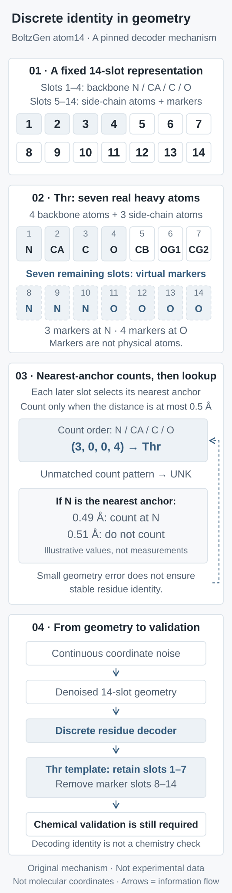

BoltzGen’s Geometric Code: When Is a Decoded Sequence Stable?
Starting from fourteen atom slots and the official count decoder, derive a distance-margin condition for identity stability, separate coordinate error from chemical validity through counterexamples, and connect denoising to budgets and testable controls.
Generating a protein sequence appears to mean choosing among twenty amino acids. Generating an all-atom structure first requires knowing how many atoms each residue contains. These decisions depend on one another: an unknown sequence leaves the coordinate tensor shape unknown, whereas generating only the backbone defers side-chain interactions with the target. One technical choice in BoltzGen deserves a closer look: a fixed number of coordinate slots carries a variable chemical identity.
The central argument is that geometric encoding brings discrete sequence variables into continuous denoising, while discrete decision boundaries remain. We should check identity stability under coordinate perturbations, consistency between slots and the decoded template, and preservation of constraints through subsequent redesign. Merely decoding an amino acid is insufficient acceptance. This article derives a conservative stability condition and uses counterexamples from the actual codebook to explain why it cannot replace chemical checks.
This is a close reading of a foundational report, not a new release today. BoltzGen: Toward Universal Binder Design was first posted on November 24, 2025. This article uses bioRxiv v2, posted June 16, 2026, and checks official code commit \(\mathtt{a07fea1}\) (the full commit is linked in the sources). The report is a preprint. The stability derivation and proposed evaluations below are our analysis; no BoltzGen weights, protein-design campaign, or wet-lab experiment was run for this article.
1. A minimal baseline: why not generate only the backbone?
An intuitive baseline samples a backbone and then uses an inverse-folding model to choose a sequence that supports it. This fixes the number of variables and makes backbone generators reusable. However, side-chain volume, hydrogen-bond donor/acceptor roles, and element positions are not yet determined during backbone generation. The second stage may have to compensate for an unsuitable local environment on an already chosen backbone. This identifies an interface between variables; it does not imply that backbone methods must perform worse.
Joint generation instead determines residue types and atomic positions together. For \(L\) design residues, the fixed fourteen-slot tensor is \(X\in\mathbb{R}^{L\times14\times3}\). The first four slots of each residue always mean N, Cα, C, and O. “Always” refers to the semantic slot order, not to backbone coordinates being frozen during generation. These are heavy-atom slots without hydrogens. Given targets, nucleic acids, and ligands retain their existing atom representations rather than being forced into fourteen slots.
Fixing the shape is only the beginning. The remaining ten slots must carry both real side chains and placeholder markers while distinguishing amino acids with the same real atom count. Collapsing every unused slot to a single location would encode side-chain size alone; it would not independently distinguish threonine, valine, and proline, for example.
2. Seven virtual slots encode threonine
Threonine has four real backbone heavy atoms and three real side-chain atoms: CB, OG1, and CG2. Thus, its first seven slots have physical-atom meanings, while its last seven are markers. The official codebook places slots 8–10 on N and slots 11–14 on O. Writing \(c=(c_{\mathrm N},c_{\mathrm{C_\alpha}},c_{\mathrm C},c_{\mathrm O})\) gives \(c_{\mathrm{Thr}}=(3,0,0,4)\). Proline places all seven markers on O, while valine places all seven on N. The three residues have the same real atom count but different marker allocations.
During training, markers coincide with designated backbone coordinates. These coincidences are information coding, not collisions between several atoms in a molecule. Markers are not additional nitrogen or oxygen atoms and must be removed from the chemical output. The feature-construction code creates real and virtual slots and copies the N/O coordinates. Residue types and side-chain/virtual-slot identity features in designed regions are masked in the supplied conditioning features; shared backbone-slot semantics can remain. Ground-truth identity constructs the training target; it should not secretly be supplied as a known design sequence.

Original mechanism schematic; neither experimental data nor physical molecular coordinates. Threonine has seven virtual slots: three N markers and four O markers. The 0.49 and 0.51 angstrom values are arithmetic examples on either side of the threshold, not a model-error distribution or hit rate.
“Continuous encoding” therefore describes the space of generated variables. It does not make amino acids continuous chemical species. Elements, atom names, and side-chain topology ultimately come from discrete residue templates. Where virtual slots concentrate after denoising determines which template interprets the coordinates.
3. The implementation counts nearest-backbone assignments
The pinned res_from_atom14 is not a nearest-complete-residue-template decoder. For each residue, it computes distances from the last ten slots to the first four backbone slots:
The resulting tuple is looked up in \(\mathtt{placement\_count\_to\_token}\). An unlisted combination returns UNK, and the table also contains an explicit UNK encoding. The code excludes distances strictly greater than 0.5 angstrom, so equality is counted. Ties between nearest atoms follow the implementation’s index rule. The prediction writer actually calls this decoder; it is not merely an unused utility.
This is a deterministic decoder with a rejection outcome, not a calibrated residue-confidence estimate. Tryptophan is especially revealing: it uses all fourteen slots as real heavy atoms, needs no markers, and has count \((0,0,0,0)\). If all ten later slots lie beyond the threshold from every backbone atom, even coordinates scattered into no plausible molecule produce that same count and decode as tryptophan. A valid count does not imply a valid side chain.
A second counterexample concerns slot order. Counts are invariant to permutations of the last ten slots. Swapping a real side-chain slot with an N marker can preserve the threonine count. Output atom names, however, follow the fixed template slot order rather than automatically rearranging all noncoincident coordinates into a side chain. An unchanged count can still put CB at N’s position. Residue identity and chemical geometry after template interpretation require separate acceptance.
4. A provable condition for stable identity
Can a small coordinate perturbation change this decoder? Let \(X\) be the original coordinates and \(\widetilde X\) the perturbed coordinates. Assume every one of the fourteen coordinates changes by Euclidean distance at most \(\varepsilon\). Because backbone anchors may move too, any slot-to-anchor distance changes by at most \(2\varepsilon\):
For each of the last ten slots, let \(d_s^{(1)}\) and \(d_s^{(2)}\) be the smallest and second-smallest distances to the four anchors, with \(r_s=d_s^{(1)}\). Preserving its nearest anchor is guaranteed when the original distance gap exceeds \(4\varepsilon\). Preserving threshold membership is guaranteed when \(|r_s-h|>2\varepsilon\). Combine these as:
Under these assumptions, every nearest-anchor assignment and threshold-membership decision remains unchanged, so both the count tuple and decoded identity remain unchanged. This is a conservative sufficient condition derived here from the reverse triangle inequality, not a model guarantee or a necessary condition. Requiring a stable nearest anchor may be unnecessary for an uncounted slot far from every anchor. Assignment changes may also cancel in the counts. If only the last ten slots move and the anchors stay fixed, the distance bound tightens; the two perturbation settings must not be conflated.
A slot exactly on the threshold makes \(\delta=0\) and provides no positive perturbation tolerance through this bound. Consider a constructed example: one N marker moves from minimum distance 0.49 to 0.51 angstrom while all other slots stay unchanged. The threonine tuple changes from \((3,0,0,4)\) to \((2,0,0,4)\). The latter is present in the official table and corresponds to aspartate (ASP), not UNK. This is an identity error that still returns a valid residue. The 0.02 angstrom displacement belongs to this artificial arithmetic example, not a measured model-error distribution.
Average residue RMSD can dilute the error of one dangerous slot. Threshold distances, nearest-anchor gaps, and identity retention under specified perturbations are more direct diagnostics. None measures experimental success: the malformed tryptophan counterexample can be far from all thresholds and highly stable. Stability asks whether the code will change; chemical validation asks whether its current interpretation makes sense.
5. Why a denoising mean need not be a valid amino acid
Fixed slots let structure prediction and design use the same kind of continuous noise process. At a given noise level, the report’s forward process has conditional distribution:
Here \(t\) is a coordinate-noise scale, not physical time in molecular dynamics; \(E\) is same-shaped independent standard Gaussian noise; and \(z\) denotes the given target and other conditions. For pure squared-error denoising in a fixed coordinate frame, the optimal prediction is the conditional mean:
This identity explains the mechanism, but it is not a term-by-term description of the full implementation loss. Actual training also includes rigid alignment, atom weights, bond-length terms, and smooth lDDT. Noiseless training encodings concentrating near valid configurations does not imply that every intermediate prediction occupies a valid coding region. A conditional mean averages uncertain hypotheses. It can fall into a different identity region or an UNK region; it need not always be invalid.
Consider a one-dimensional teaching example unrelated to molecular coordinates. Let \(U\in\{-a,+a\}\) be equally likely, \(a>0\), and observe \(Y=U+t\eta\) with \(\eta\sim\mathcal N(0,1)\). The ratio of the two Gaussian likelihoods gives:
At \(y=0\), the two identities are equally likely and the conditional mean is zero, neither \(-a\) nor \(+a\). This shows why a continuous MSE prediction may lie between discrete states, but does not establish failure of diffusion sampling. A denoiser supplies a direction at the current noise level, and a sampler updates coordinates through multiple noise levels. For the Gaussian corruption above and an ideal exact conditional mean:
The flow on the right is integrated toward decreasing \(t\), rather than treating a single mean as the final molecule. A practical stochastic sampler also injects noise; heuristic step or noise scaling changes sampling behavior. This does not prove that the trained network, discretized integration, or constrained practical outputs follow an exact distribution. The report allocates additional sampling steps around the interval where identities tend to form. That is an empirical scheduling observation, not a universal promise across targets or a time interval in a chemical reaction.
The coordinate distribution is pushed through decoder \(d\) into discrete sequence space. For one residue, this can be written as:
Here \(\mathcal A\) contains the twenty standard amino acids. Having no separate sequence-classification head does not remove discrete decisions, rejection regions, or sequence bias. Output type frequencies should be examined together with UNK, template geometry, and target conditioning.
6. Where should the computational budget end?
With \(L_{\mathrm{design}}\) design residues and \(A_{\mathrm{given}}\) other input atoms, the total coordinate-slot count is:
\[A=14L_{\mathrm{design}}+A_{\mathrm{given}}\]
Coordinate storage grows linearly with \(A\), but model work is not just the coordinate count. The report’s trunk maintains pair representations over residue and other tokens. For \(R\) tokens, this storage typically grows with \(R^2\), while naive triangle operations can require cubic work. Atom layers use local attention, so it is misleading to describe the entire network as global \(A^2\) attention. Fourteen slots add slots for small side chains while buying a common tensor shape. Actual cost depends on cropping, batching, implementation, and hardware.
For candidates sharing conditions whose trunk features can be reused, a conceptual campaign budget is:
Here \(K\) counts denoiser calls per trajectory; \(N_{\mathrm{gen}}\) counts generated candidates; \(N_{\mathrm{redesign}}\) and \(N_{\mathrm{refold}}\) count redesign and refolding tasks; and \(C_{\mathrm{IF}}\) is the inverse-folding cost. Different conditions, lengths, or scaffolds require separate trunk accounting. This is a budget ledger, not an exact FLOP or runtime prediction. Count decoding itself needs only ten-by-four distances per residue and has complexity \(\mathcal O(L_{\mathrm{design}})\), which scarcely characterizes the whole pipeline.
Joint geometric generation has not removed postprocessing. The official pipeline still includes optional inverse folding, refolding, filtering, ranking, and diversity selection. Matching only the number of molecules sent to the lab, while allowing one method tens of thousands more generated candidates, additional sequences, or manual selection, compares different campaign budgets. Densifying steps around identity changes should be tested at equal denoiser-call budgets to establish whether the allocation is better.
7. How could we test whether geometric encoding is more reliable?
The following is a proposed evaluation protocol, not a model experiment completed here. Backbone generation plus inverse folding can provide a pipeline baseline; alternative schedules within geometric encoding can provide mechanism comparisons. Separately fix target information, candidate counts, denoiser calls, redesign counts, refolding model, and final experimental budget, and record manual intervention. Isolating the encoding’s contribution also requires training or systematic ablations. Comparing hit rates from two pretrained models does not causally attribute the difference to encoding.
Layer
Testable readouts
What they do not establish alone
Identity decoding
UNK frequency, threshold margins, identity retention under specified perturbations
Correct template bond lengths, chirality, or slot order
Template geometry
After removing markers and assigning template names, check bond lengths, angles, chirality, clashes, and constraint residuals
Refolding reproduces the interface
Sequence reinterpretation
Retain both original decoded and redesigned sequences; compare structures and constrained sites
Differences arise from encoding rather than postprocessing
Target generalization
Stratify by target/interface homology clusters and time; report the full candidate funnel and experimental readouts per target
Stable gains on unknown targets have been established universally
Remove virtual slots before evaluating template geometry. Treating coincident markers as real atoms in clash or energy calculations produces physically meaningless bad scores. Conversely, removing markers must not hide misplaced real slots. Recheck identity and bond constraints after redesign at disulfides or fixed functional sites; the second stage should not be assumed to preserve every first-stage condition.
Generalization splits should examine training structures, target sequences, known bound interfaces, and self-distillation data provenance. Low target sequence similarity does not automatically exclude help from a similar interface or structural prior. Supplying target structure is an input setting and should be stated explicitly rather than mixed with structure-free target design. The report notes ubiquitin-like diversity collapse for certain targets in the 73–76-residue range. This is a concrete warning: decodability, foldability, and frequent sampling can coexist with insufficient use of target conditioning. Removing, mismatching, or replacing target conditions could test whether interfaces change in target-dependent ways; these too are proposed controls.
8. A transferable conclusion: validate three interfaces
One technical contribution of BoltzGen is to place variable atom topology associated with unknown sequences into a fixed-shape continuous generation problem. This enables continuous denoising to be reused while jointly modeling variables in geometric context. Whether the choice improves a particular design task requires fair budgets and target splits; a tidy representation alone cannot decide that.
Three interfaces deserve separate acceptance: coordinates to counts, including distance from dangerous decision boundaries; counts to templates, including UNK handling, slot order, and nonphysical markers; and templates to downstream processing, including preservation of constraints through marker removal, redesign, and refolding. The sufficient bound here addresses a small part of the first interface. The malformed tryptophan and permutation counterexamples explain why the second must be checked independently.
Continuous coordinate error, discrete identity stability, and template chemical validity should therefore be reported separately. They are related, but no single readout substitutes for the other two. Connecting them to compute budgets, target dependence, and final validation makes it possible to establish the conditions under which geometric encoding helps design.
Tool note: citation-management was used to verify reference metadata. Scientific Agent Skills is included among the sources solely for tool attribution, not as evidence for protein-design mechanisms.